이 글은 전체 2편 중 2편입니다. 긴 영상을 주제 흐름에 맞춰 나누어 정리했습니다.
이 글은 전체 2편 중 2편입니다.
채널: Evan Carmichael | 길이: 41:07 | 날짜: 2026-03-26
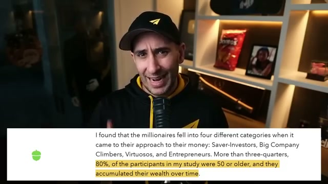
이 파트는 앞선 법칙에서 이어지는 실패 경험의 해석으로 시작된다. 화자는 자신도 두려웠다고 말하지만, 이후 모든 실패가 큰 성공의 밑거름이 되었다고 설명한다. 수년간 콩으로 끼니를 해결한 시기, 제품 출시 실패, “탱크 인터뷰” 같은 부담스러운 장면은 당시에는 고통이었지만 나중에는 역량과 판단력을 키우는 훈련이 되었다. 실패가 없었다면 다음 단계의 자신도 없었다는 식으로, 실패를 제거해야 할 사건이 아니라 축적해야 할 경험으로 재해석한다.
핵심은 “무모함”과 “계산된 위험”을 구분하는 데 있다. 화자는 위험을 피하라고 말하지 않지만, 준비 없이 돌진하라고도 말하지 않는다. 철저히 준비하고, 가능한 정보를 모으고, 손실 가능성을 인식한 다음에도 두려움 때문에 멈추지는 말라는 것이다. 두려움은 위험의 존재를 알려주는 신호이지만, 동시에 그 길에 성장이 있다는 표시일 수 있다.
여기서 두려움은 판단의 끝이 아니라 시작점으로 다뤄진다. 자신을 믿고, 넘어졌을 때 더 똑똑하게 다시 일어서면 된다. 이 말은 실패를 가볍게 여기라는 뜻이 아니라, 실패 이후의 학습 능력을 자기 자산으로 삼으라는 뜻이다. 부의 게임에서는 실패하지 않는 사람이 아니라, 실패를 더 빠르게 해석하고 다음 행동으로 전환하는 사람이 오래 살아남는다.
법칙 15는 “인내하라”는 메시지다. 화자는 즉각적인 만족을 좇는 세상에서 진정한 부는 장기전이라고 말한다. 많은 사람은 6개월 정도 시도해 보고 눈에 보이는 성과가 없으면 포기하거나, 다음 유행으로 옮겨간다. 그러나 부를 만든 사람들의 실제 경로는 대체로 느리고, 반복적이며, 지루할 정도로 꾸준하다.
이 대목에서 여러 수치가 제시된다. 백만장자의 80%는 50대 이상이고, 그들은 대부분 시간이 지나며 자산을 축적했다. 저축형 투자자는 평균 32년, 기업가도 평균 12년이 걸렸다고 설명된다. 언론은 22살 코인 억만장자 같은 극단적 사례를 조명하지만, 그것은 예외이지 일반적인 부의 형성 방식이 아니다.
이 법칙은 “오래 걸리니 포기하지 말라”는 단순한 위로가 아니다. 화자는 현명한 선택을 하면 30년씩 걸리지 않을 수도 있지만, 그래도 진짜 부는 금방 되지 않는다고 선을 긋는다. 중요한 것은 장기 목표를 세우고 꾸준히 실행하는 것이다. 복리의 마법은 돈뿐 아니라 지식, 관계, 신뢰, 기술에도 적용되지만, 복리가 작동하려면 시간이 필요하다.
인내는 여기서 수동적인 기다림이 아니라 전략적 강점으로 정의된다. 유행을 좇는 사람은 방향을 계속 바꾸느라 축적을 만들지 못한다. 반대로 장기적 관점을 가진 사람은 매일의 작은 행동이 시간이 지나며 커지는 구조를 만든다. 그래서 인내는 부의 성격을 이해한 사람이 갖는 핵심 경쟁력이다.
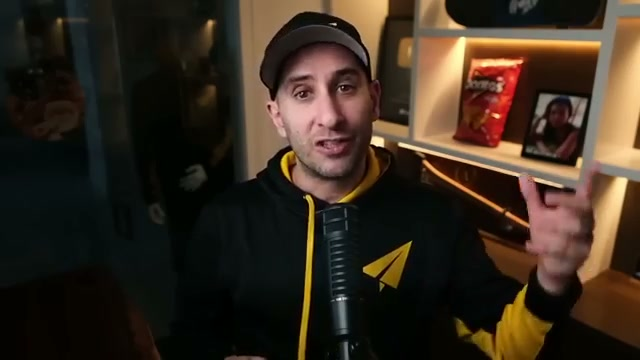
법칙 16은 “레버리지”다. 화자는 냉정한 진실을 먼저 제시한다. 시간과 노력만으로는 절대 큰 부를 만들 수 없다는 것이다. 하루는 24시간이고, 몸은 하나이기 때문에 혼자 직접 하는 방식에는 명확한 한계가 있다.
부자들은 이 한계를 고용, 위임, 자동화, 파트너십으로 넘어선다. 그들은 타인의 시간, 재능, 자원, 전문성을 활용해 자신이 직접 일하지 않아도 가치가 생산되는 시스템을 만든다. 이때 레버리지는 남을 착취하는 개념이 아니라, 각자의 강점을 결합해 더 큰 결과를 만드는 구조에 가깝다. 자신보다 특정 영역에서 더 뛰어난 사람을 데려오는 것이 성장의 핵심이 된다.
화자는 유튜브 운영 경험을 예로 든다. 오랫동안 카메라 앞뒤의 모든 일을 혼자 처리했고, 도움을 받기 위해 돈을 쓰는 것도 망설였다. 가난한 환경에서 자라 처음에는 지나치게 아끼는 성향이 있었기 때문이다. 하지만 첫 편집자를 고용하자 주 1회 올라가던 영상이 매일 올라가기 시작했고, 수입도 늘어났다.
이 경험은 레버리지의 실용적 의미를 잘 보여준다. 직접 편집하는 시간은 줄었지만, 더 많은 콘텐츠가 생산되고 더 많은 기회가 생겼다. 이후 사업에서도 자신보다 더 똑똑한 파트너와 직원들을 영입하자 성장 속도가 폭발했다고 설명한다. 연구에 따르면 백만장자의 80% 이상이 자신의 비전을 실현하기 위해 전문가 팀에 의존한다는 점도 강조된다.
화자는 레버리지를 적용하기 위해 스스로에게 질문하라고 한다. 어떤 업무를 다른 사람의 전문성으로 처리할 수 있는가. 어떤 낮은 부가가치 작업을 가상 비서에게 맡기면 고부가가치 업무 시간이 확보되는가. 부족한 기술이나 인맥은 어떤 파트너십으로 보완할 수 있는가.
이 관점은 “사람을 고용하면 비용이 든다”는 사고에서 “적절한 고용을 놓치면 더 큰 손실이 생긴다”는 사고로 전환한다. 많은 초보 사업가나 크리에이터는 돈을 아끼기 위해 모든 일을 직접 한다. 그러나 그 결과 가장 중요한 일, 즉 전략, 판매, 콘텐츠, 고객, 제품 개선에 쓸 시간이 사라진다. 비용 절감이 성장 포기를 의미하는 순간이 생긴다.
화자는 “당신만의 드림팀”을 만들라고 말한다. 이는 거대한 조직을 당장 만들라는 뜻이 아니다. 작은 규모에서도 자신이 취약한 영역을 보완해 줄 사람, 반복 업무를 덜어 줄 사람, 더 빠른 실험을 가능하게 해 줄 사람을 찾으라는 뜻이다. 부는 개인의 근면만으로 커지는 것이 아니라, 확장 가능한 구조를 만들 때 커진다.
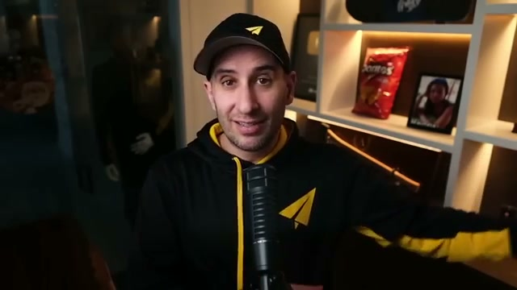
법칙 17은 “행동하라”다. 화자는 속도가 완벽을 앞선다고 말한다. 돈은 행동하는 자의 몫이며, 기업가들이 자주 빠지는 장애물은 분석 마비라고 지적한다. 계획만 세우다 미루는 동안 기회는 떠나간다.
부자들은 행동 편향을 갖고 있다. 그들은 무작정 움직이는 것이 아니라, 최대한 조사한 후 충분한 정보가 모이면 실행으로 옮긴다. 제프 베조스는 이런 행동 편향을 아마존 성공의 비결 중 하나로 보았고, 워런 버핏은 충분한 사실이 모였는데도 불필요하게 기다리는 태도를 경계했다. 핵심은 의사결정에 필요한 수준의 정보와, 결정을 회피하기 위해 끝없이 정보를 모으는 상태를 구분하는 것이다.
“주차된 차는 조향이 불가능하다”는 비유는 이 법칙의 핵심을 압축한다. 멈춰 있으면 방향을 바꿀 수도, 개선할 수도, 배우기도 어렵다. 움직여야 피드백이 생기고, 피드백이 있어야 방향을 조정할 수 있다. 그래서 행동은 무지의 반대가 아니라 명확성을 만드는 방법이다.
화자는 주식 투자를 예로 든다. 투자를 배우고 싶다면 먼저 계좌를 열고 소액을 입금하라고 한다. 처음부터 모든 것을 알아야 하는 것이 아니라, 작게 시작하며 배우면 된다. 사업 아이디어도 마찬가지다. 미흡해도 시작하고, 고객 반응과 피드백으로 다듬어 가면 된다.
이 구간에서 화자는 “돈은 속도를 좋아한다”고 말하지만, 그 속도는 어리석은 질주가 아니다. 무모하고 무지한 행동이 아니라 결단력 있는 실행에서 나오는 추진력이다. 완벽히 준비되기 전 시작하라는 말은 준비를 하지 말라는 뜻이 아니라, 준비를 핑계로 영원히 출발하지 않는 상태를 깨라는 뜻이다. 실행은 명확성보다 먼저 와야 한다.
“오늘의 평범한 계획이 실행되지 않을 완벽한 계획보다 낫다”는 메시지도 반복된다. 계획은 실제 상황과 만나기 전까지 가정에 불과하다. 시작하고, 넘어지고, 배우고, 조정하는 과정에서 계획은 현실성을 얻는다. 반대로 머릿속에서만 다듬은 계획은 아무리 정교해 보여도 시장, 고객, 돈, 시간이라는 현실을 통과하지 못한다.
이 법칙은 후반부의 “인생 설계 5단계”와도 이어진다. 원하는 삶을 만들기 위해서도 비전만으로는 부족하고, 작은 행동을 오늘 시작해야 한다. 행동은 부를 만드는 도구이자 삶을 재설계하는 도구다. 결국 변화는 생각의 양이 아니라 실행의 반복에서 온다.
법칙 18은 숫자를 파악하고 돈의 흐름을 좇으라는 것이다. 화자는 재정을 숫자로 보지 않는 태도를 눈을 가리고 운전하는 것에 비유한다. 돈이 어디로 들어오고 어디로 나가는지 모르는 상태에서는 방향을 잡을 수 없다. 재정적 무지는 단순한 불편이 아니라 큰 비용으로 돌아온다.
부자들은 자신의 숫자에 민감하다. 수입, 지출, 이익률, 세금, 투자 수익률 같은 핵심 지표를 늘 파악한다. 개인도 자신의 인생에서 CFO가 되어야 한다. 예산을 세우고, 정기적으로 업데이트하며, 돈이 어디로 가는지 점검해야 한다.
중요한 것은 완벽한 도구가 아니다. 앱, 스프레드시트, 노트, 회계 프로그램 등 어떤 방식이든 자신에게 맞는 방법으로 기록하면 된다. 핵심은 숫자를 외면하지 않는 것이다. 특히 사업가라면 숫자 관리는 생존과 직결된다.
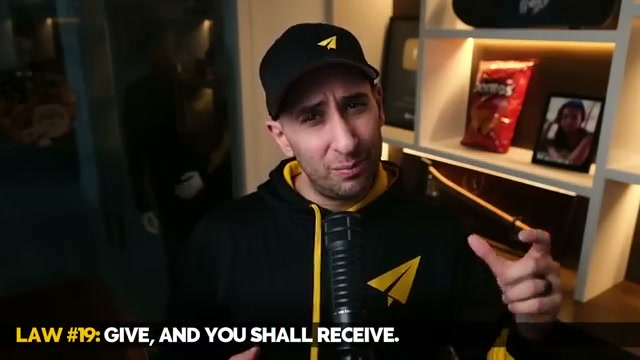
화자는 소규모 사업체의 82%가 현금 흐름 관리 실패로 파산한다고 말한다. 이 수치는 사업에서 매출보다 현금 흐름이 얼마나 중요한지를 강조한다. 매출이 있어도 돈이 언제 들어오고 언제 나가는지 모르면, 세금, 비용, 급여, 투자 타이밍에서 무너질 수 있다. 돈의 흐름을 모르는 사업은 겉보기와 달리 매우 취약하다.
화자 자신도 사업 초기에는 Microsoft Money로 재정을 관리했지만, 회계가 엉망이었다고 고백한다. 그러나 중요성을 깨닫고 제대로 보기 시작하자 절세와 환급을 통해 현금 흐름을 개선하는 방법을 찾았다. 이것은 “주의를 기울인 보상”으로 표현된다. 돈을 자세히 보면 돈이 새는 곳과 회수할 수 있는 곳이 보인다.
기록하면 자연스럽게 최적화가 시작된다. 낭비되는 지출을 발견하고, 절약하거나 투자할 기회를 찾고, 불쾌한 놀라움을 피할 수 있다. 은행 명세서와 신용 점수를 확인하며 매주 돈과 약속을 잡으라는 표현은 재정을 정기 회의처럼 다루라는 뜻이다. 은행 계좌가 미스터리가 되어서는 안 된다.
법칙 19는 “주면 받게 된다”다. 화자는 이 말이 영적인 이야기처럼 들리지만, 실제 성공 전략이기도 하다고 설명한다. 관대함은 번영을 낳고, 주변의 부유한 사람들은 자선 기부와 타인 멘토링에 힘쓰는 경우가 많다고 말한다. 그들은 주변 사람에게 기회를 만들어 주며, 그 과정에서 더 넓은 네트워크와 신뢰를 얻는다.
이 원칙은 단순한 도덕적 권고가 아니다. 세상에 내보낸 것은 더 크게 돌아오기 마련이라는 인식이 깔려 있다. Zig Ziglar의 메시지처럼 다른 사람들이 원하는 것을 얻도록 도우면, 자신도 원하는 것을 얻게 된다는 논리가 소개된다. 서비스와 관대함의 마인드셋으로 행동하면 사람들은 기회의 문을 열어 주고, 고객은 추천을 하며, 평판은 강해진다.
관대함은 실질적으로 네트워크와 역량을 확장한다. 봉사하면서 영향력 있는 사람을 만나고, 멘토링을 하면서 오히려 더 많이 배우게 된다. 주는 행동은 관계를 만들고, 관계는 기회를 만든다. 그래서 관대함은 부의 반대가 아니라 부를 키우는 사회적 자본이다.
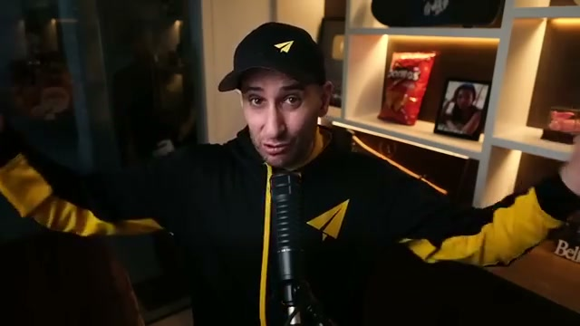
화자는 나눔이 사람을 더 부유하게 만든다고 말한다. 그 이유는 나눔이 결핍에 대한 두려움을 줄이기 때문이다. 자신이 가진 것을 현명하게 나누는 사람은 돈을 움켜쥐어야만 안전하다는 사고에서 벗어난다. 물론 형편에 맞게 베풀어야 하며, 돈뿐 아니라 시간과 지식도 나눔의 수단이 될 수 있다.
백만장자의 75%가 매달 5시간 이상 봉사하고, 다수가 멘토링에도 참여했다는 연구 결과가 제시된다. 화자는 이것을 우연으로 보지 않는다. 나눌수록 성장한다는 법칙이 작동한다고 해석한다. 부는 자기만을 위한 축적이 아니라, 자신을 포함한 삶의 개선에 목적이 있음을 상기시킨다.
이 대목은 19번 법칙과 20번 법칙을 연결한다. 관대함은 겸손을 만들고, 겸손은 장기적인 부의 유지에 필요하다. 남을 돕는 사람은 자신의 성공이 혼자만의 능력으로 이루어진 것이 아니라는 사실을 더 잘 인식한다. 그 인식이 자만을 막고, 계속 배우게 만든다.
법칙 20은 겸손과 열정을 지키는 것이다. 돈은 유동적인 목표이므로 특정 수치를 달성했다고 끝나는 것이 아니다. 부를 유지하려면 자만을 경계하고 꾸준한 동기를 유지해야 한다. 성공을 다 이루었다고 느끼는 순간 오히려 추락이 시작될 수 있다.
빌 게이츠의 경고가 여기서 등장한다. 성공은 나쁜 스승이 될 수 있고, 똑똑한 사람도 자신이 실패하지 않을 것이라고 착각하게 만든다. 성공의 위험은 실패보다 더 은밀하다. 실패는 아픔을 통해 배우게 만들지만, 성공은 자신이 이미 충분히 안다고 믿게 만들 수 있기 때문이다.
워런 버핏과 오프라 같은 위대한 사람들은 배움을 멈추지 않는 사례로 언급된다. 그들은 계속 도전하고, 큰 성취 이후에도 초보자처럼 행동한다. 화자 역시 많은 구독자와 사업이 있어도 매일 학생처럼 아침을 맞고, 더 성장하고 싶다고 말한다. 성취는 축하하되 호기심과 감사함을 잃지 말라는 것이다.
겸손은 자신의 성공에 타인의 역할과 운이 있었음을 인정하는 태도다. 이런 마음은 오만에 빠져 잘못된 행동을 하고 모든 것을 잃는 일을 막아준다. 배고프고 겸손한 기업가는 성취에 안주하는 사람보다 훨씬 앞서간다. 돈은 그것을 당연하게 여기는 사람에게서 사라지기 쉽다는 경고도 붙는다.
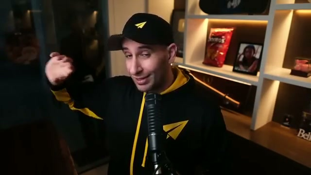
화자는 20가지 법칙을 배운 것만으로는 충분하지 않다고 말한다. 지식은 행동으로 이어질 때만 변화가 된다. 오늘 한 가지라도 실천하라는 요구가 이어진다. 저축 계좌를 개설하거나, 멘토에게 전화하거나, 마침내 제품을 출시하는 식의 작은 행동이면 된다.
모든 큰 성공은 작고 꾸준한 승리들이 쌓여 이루어진다. 여기까지 와서 전략을 배우는 사람은 쉬운 답만 찾는 대다수와 이미 달라졌지만, 그 차이는 실행으로 확인되어야 한다. 자신에게 투자하는 것은 정보를 더 소비하는 일이 아니라, 배운 것을 현실의 행동으로 바꾸는 일이다. 이제 법칙들로 자신만의 부와 삶을 만들라는 결론으로 이어진다.
여기서 영상은 새로운 주제로 넘어간다. 올해 원하는 삶을 설계할 5단계가 소개된다. 부를 만드는 법칙들이 돈의 관점에서 삶을 다뤘다면, 이어지는 파트는 인생 전체의 주도권을 어떻게 되찾을지 다룬다. 돈을 버는 방법과 원하는 삶을 사는 방법이 분리되지 않는다는 흐름이다.
화자는 원하는 삶을 직접 설계하지 않으면 원치 않는 삶을 살게 된다고 말한다. 많은 사람은 하루하루 떠밀리듯 살며, 남이 결정하게 내버려 둔다. 그러다 어느 순간 자신의 꿈을 남의 계획과 맞바꿨다는 사실을 깨닫는다. 이 메시지는 삶의 주도권을 회복하라는 경고다.
어부와 사업가의 우화가 소개된다. 사업가는 어부에게 더 확장하고, 더 많이 일하고, 수십 년 동안 지치도록 노력하라고 권한다. 그렇게 해야 결국 편안히 쉬며 인생을 즐길 수 있다는 것이다. 그러나 어부는 이미 사랑하는 사람들과 좋아하는 일을 하며 하루를 보내고 있다.
이 우화의 교훈은 남들이 말하는 성공의 공식이 항상 자신의 삶에 맞는 것은 아니라는 점이다. 진정 원하는 것이 무엇인지 알고, 그것을 남의 기준 때문에 미루지 않아야 한다. 부와 성공은 삶을 더 좋게 만들기 위한 수단이지, 이미 원하는 삶을 살 수 있는 가능성을 희생하라는 명령이 아니다.
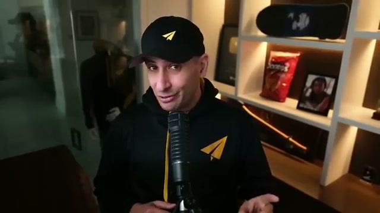
화자는 19살 때 이 교훈을 직접 경험했다고 말한다. 안정적이고 성공적인 고연봉 제안을 거절하고, 월 300달러를 받으며 스타트업 지분을 선택했다. 그 선택은 경제적으로 안전하지 않았고, 실패 가능성도 컸다. 그러나 40살이 되어 돌아봤을 때 꿈에 도전하지 않은 자신을 후회할 모습이 더 두려웠다.
이 대목은 실패의 두려움과 후회의 두려움을 비교한다. 화자는 평생 후회할 것 같다는 생각이 들었고, 그 후회의 두려움이 실패의 두려움보다 컸다고 말한다. 그래서 주도적으로 자기 길을 설계했고, 그것이 인생 최고의 선택이었다고 평가한다. 여기서 핵심은 남들이 인정하는 안정성이 반드시 자기 삶의 정답은 아니라는 점이다.
또한 화자는 시청자가 가질 법한 반론도 직접 다룬다. 책임도 있고, 커리어도 이미 쌓였고, 너무 늦었다고 느낄 수 있다. 하지만 그런 의심이야말로 지금 당장 시작해야 하는 이유라고 말한다. 가족이 의지한다면 오히려 자랑스러운 삶을 살고 모범을 보여야 하며, 나이가 많다고 느낀다면 남의 꿈을 사느라 낭비할 시간이 없다는 것이다.
장애물은 변명이 아니라 동기가 될 수 있다. 기다림과 변명을 멈추고, 오늘 원하는 삶을 설계하기 시작해야 한다. 이 전환은 돈 버는 기술에서 삶의 전체 방향으로 관점을 확장한다. 그 다음부터 실질적인 다섯 단계가 제시된다.
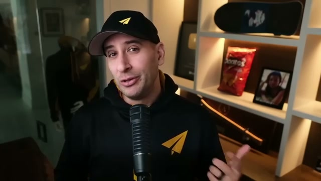
첫 번째 단계는 삶에 완전히 책임지는 것이다. 누구도 대신 구해 주거나 꿈꾸는 삶을 선물해 주지 않는다. 모든 것은 자신에게 달려 있다는 사실을 받아들이는 것이 출발점이다. 이것은 냉정하지만 동시에 힘을 주는 메시지다.
심리학에서는 이를 “내적 통제 위치”라고 부른다. 자기 삶의 결과가 외부 환경이 아니라 자신의 선택과 행동에 의해 바뀔 수 있다고 믿는 사람들이다. 연구에 따르면 이런 사람들은 더 성공하고, 건강하며, 행복해할 가능성이 높다고 설명된다. 자신이 운명을 만든다고 믿으면 실제로 그 믿음에 맞는 행동을 하게 된다.
화자는 삶의 모든 것, 좋든 나쁘든 책임지라고 말한다. 남 탓, 경제 탓, 과거 탓을 멈추라는 것이다. 현재 위치에 대한 책임을 지는 순간, 앞으로 나아갈 방향을 바꿀 힘이 생긴다. 이것은 자신을 자책하라는 말이 아니라, 자신이 통제할 수 있는 영역을 인식하라는 말이다.
그의 어머니가 강조했다는 말도 이어진다. 능력에는 책임이 따른다는 것이다. 할 수 있다면 해야 한다는 메시지다. 책임은 무겁지만, 동시에 자유다. 내가 책임지는 일이라면 내가 바꿀 수도 있기 때문이다.
원하는 삶은 복권 같은 것이 아니다. 그것은 선택이고, 사람은 매일의 행동과 무행동을 통해 그 선택을 하고 있다. 지금 이 순간 자신이 인생 설계의 주인임을 정해야 한다. 이 사실을 내면화하면 힘과 명확함이 솟구친다는 설명이 붙는다.
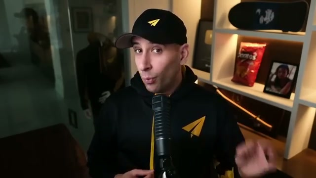
두 번째 단계는 비전을 정의하고 자신만의 이유를 찾는 것이다. 목표가 없으면 원하는 삶을 설계할 수 없다. 무엇을 원하는지뿐 아니라 왜 그것이 의미 있는지 알아야 한다. 비전과 이유를 명확히 하는 것이 핵심이다.
화자는 이상적인 삶이 무엇인지, 왜 그것이 중요한지 자세히 답해 보라고 한다. 그리고 그것을 적어 보라고 권한다. 목표를 쓰기만 해도 달성률이 42% 높아진다는 연구가 언급된다. 쓰는 행위는 모호한 바람을 구체적인 방향으로 바꾸는 장치다.
단순히 행복이나 성공을 바란다고 말하는 것은 충분하지 않다. 구체적인 그림을 그려야 한다. 예를 들어 마케팅 회사로 소상공인을 돕고 싶다거나, 호숫가 오두막에서 소설을 쓰고 싶다는 식으로 선명해야 한다. 화자는 맛볼 수 있을 정도로 구체적으로 정의하라고 말한다.
비전은 “무엇”뿐 아니라 “왜”에 관한 것이다. 목적은 자신의 아픔을 들여다볼 때 잘 발견된다. 극복한 가장 큰 고난이야말로 타인을 돕는 특별한 능력이 될 수 있다. 자신을 쓰러뜨린 도전, 상처, 스스로 해결한 문제가 나중에는 다른 사람을 돕는 힘이 된다.
가난을 극복했든, 병을 이겨냈든, 극심한 수줍음을 극복했든, 그 경험은 사명이 될 수 있다. 화자도 창업 초기에 외롭고 실패자처럼 느끼며 고통스러웠지만, 그 경험이 목적이 되었다고 설명한다. 이제 다른 창업가들이 자신처럼 고생하지 않도록 돕는 동기를 얻었다는 것이다. 고통은 목적에 연료를 공급한다.
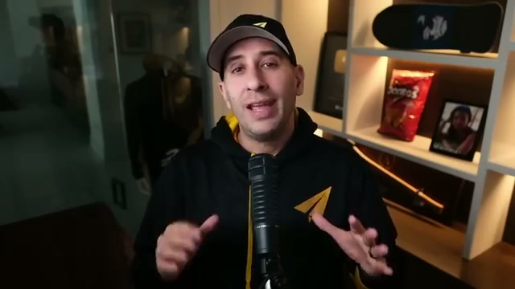
세 번째 단계는 즉각 실행이다. 목표를 정했다면 바로 움직여야 한다. 완벽히 준비되기 전이라도 먼저 시작하는 것이 핵심이다. 대부분의 사람은 완벽한 타이밍, 완벽한 계획, 더 많은 확신을 기다리다가 결국 아무것도 하지 못한다.
오늘 실행하는 좋은 계획이 실행되지 않을 완벽한 계획보다 낫다. 명확함은 생각만으로 오지 않고, 행동할 때 온다. 작은 한 걸음이라도 내디디면 피드백을 통해 배우고 추진력이 쌓인다. 행동은 방향을 알려 주고, 방향은 다시 다음 행동을 낳는다.
화자는 자신도 이 교훈을 힘들게 배웠다고 고백한다. 경력 초기에는 완벽주의자였고, 고객과 대화하는 대신 여름 내내 완벽한 사업 계획서만 다듬었다. 그 결과 기회는 사라졌고, 준비가 안 되어 4천만 달러 거래를 놓쳤다. 이 사건은 아팠지만 큰 교훈을 주었다.
그가 깨달은 것은 대부분의 계획이 어차피 틀릴 수 있다는 점이다. 따라서 직접 나가서 가정을 검증해야 한다. 시장과 고객은 책상 앞에서 만든 계획보다 훨씬 빠르게 진실을 알려 준다. 그는 더 고민하지 않고 행동하기 시작했고, 그것이 큰 변화를 가져왔다고 말한다.
실패가 두려워 망설여진다면 생각을 바꾸라고 한다. 행동하지 않는 것이 진짜 실패다. 실패는 적어도 데이터를 남기고, 경험을 남기고, 다음 선택을 가능하게 한다. 그러나 실행하지 않으면 아무것도 쌓이지 않는다.
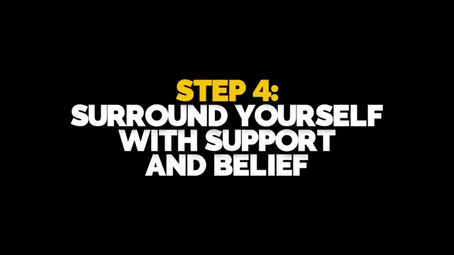
Psychology Today에 따르면 92%의 사람들이 목표 달성에 실패하며, 주된 이유는 실행력 부족이라고 소개된다. 화자는 시청자가 그 92%에 속하지 않기를 바란다고 말한다. 가장 큰 비전을 가장 작은 단계로 쪼개 오늘 바로 실행하라는 것이다. 메일을 쓰든, 시제품을 만들든, 조금이라도 전진하게 하는 일이면 무엇이든 하라고 한다.
모든 답을 몰라도 괜찮다. 해 가면서 방법을 터득하게 된다. 행동은 명확성을 만들고, 자신감을 준다. 한 걸음 내디딜 때마다 뇌는 자신이 주도적인 사람이라는 증거를 얻는다.
이것은 심리적 강화의 구조이기도 하다. 작은 행동이 작은 성취를 만들고, 작은 성취는 다음 행동의 자신감을 만든다. 망설이지 말고 지금 시작하면 미래의 자신이 감사할 것이라는 메시지가 이어진다. 여기서 실행은 단순한 생산성 기술이 아니라 정체성을 바꾸는 행위로 제시된다.
네 번째 단계는 자신을 믿어주는 환경을 만드는 것이다. 꿈꾸는 삶의 설계는 혼자서는 어렵다. 우리는 주변 환경과 사람의 영향을 크게 받는다. 따라서 자신을 이끌고 도전하게 하며, 스스로를 믿기 힘들 때도 자신을 믿어주는 사람들과 함께해야 한다.
동기부여는 혼자서는 오래가지 않는다. 누구나 의심하는 순간이 있고, 그때 환경이 성패를 결정짓는다. Jim Rohn의 유명한 원칙처럼 사람은 함께 시간을 보내는 주변 사람들의 영향을 크게 받는다. 주변 다섯 명이 열정적이고 긍정적이면 함께 성장하지만, 부정적이고 안주하며 냉소적인 사람들은 끌어내릴 수 있다.
이 말은 인간관계를 도구적으로만 보라는 뜻이 아니다. 다만 머릿속에 누구의 목소리를 들이고 있는지 점검해야 한다는 뜻이다. 때로는 부정적인 사람과 경계를 세울 필요가 있다. 동시에 영감을 주는 멘토를 적극적으로 찾아야 한다.
연구 결과도 제시된다. 친구에게 목표를 말하기만 해도 달성 확률이 65% 올라가고, 친구와 정기 점검을 하면 95%까지 뛴다는 것이다. 이는 지지와 책임감의 힘을 보여준다. 파트너를 찾거나, 그룹에 참여하거나, 친구에게 지켜봐 달라고 부탁하는 것이 실제 행동 가능성을 높인다.
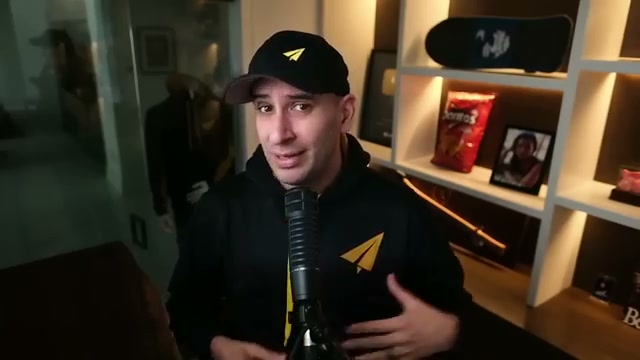
화자는 지지가 꼭 지인에게서만 오는 것은 아니라고 말한다. “빌린 믿음”이라는 개념이 나온다. 아직 스스로를 충분히 믿지 못할 때, 다른 사람의 이야기와 멘토링을 통해 자생력을 갖출 때까지 버틸 수 있다는 뜻이다. 이는 직접적인 인간관계뿐 아니라 책, 영상, 강연, 온라인 콘텐츠도 환경의 일부라는 관점이다.
초기에는 어머니의 격려로 믿음을 얻었고, 나중에는 오프라 윈프리 같은 인물에게서 배웠다고 한다. 오프라가 가난과 역경을 어떻게 극복했는지 읽으며 가능성을 보았다는 것이다. 그는 자신을 성장시키는 목소리와 본보기로 환경을 채웠다. 책, 영상, 가상 멘토는 지원 시스템의 일부가 될 수 있다.
스스로 믿음을 쌓을 때까지 환경에서 믿음을 빌리는 것이 초기 단계를 극복하는 방법이다. 세상을 직접 꾸미고, 영감을 주는 계정만 팔로우하며, 우울하게 만드는 콘텐츠는 과감히 삭제하라는 실용적 조언도 나온다. 꿈을 응원해 주고 책임감을 심어 줄 사람들과 나누어야 한다. 긍정과 믿음으로 자신을 둘러싸면 힘든 순간에도 계속 나아갈 동기와 용기를 얻는다.
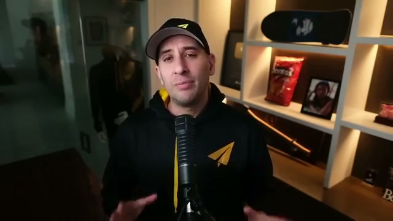
다섯 번째 단계는 실패를 받아들이고 장기적인 관점에서 적응하는 것이다. 인생 설계는 한 번에 완성되는 계획이 아니라 지속적인 과정이다. 어떤 계획도 완벽할 수 없지만 괜찮다. 실패를 피드백으로 받아들이고 꾸준함을 유지해야 한다.
일이 잘못되는 순간은 반드시 온다. 그러나 그것이 자신이 할 수 없다는 증거라고 생각해서는 안 된다. 그것을 자신이 되어야 할 사람으로 성장하는 과정으로 받아들여야 한다. 실패는 정체성에 대한 판결이 아니라 다음 조정을 위한 정보다.
에디슨의 전구 발명 일화가 소개된다. 실패한 것이 아니라 작동하지 않는 방법들을 찾아냈다는 식의 사고가 필요하다는 것이다. 심리학에서는 이를 성장 마인드셋이라고 부른다. 노력으로 지능과 역량이 발달한다고 믿는 사람들은 도전을 즐기고, 좌절에도 굴하지 않고 계속 나아간다.
실패는 영원하지 않으며 하나의 디딤돌일 뿐이다. 좌절은 배움이다. 화자도 이 마인드셋을 실천 중이라고 말한다. 설교가 아니라 자신의 실제 경험에서 나온 조언이라는 점을 강조한다.
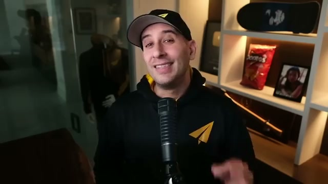
화자는 유튜브를 시작한 뒤 구독자 2,000명까지 5년이 걸렸다고 말한다. 그동안 영상을 만들며 정성을 다했지만, 실험과 실패가 반복되었고 모든 것이 안 되는 것처럼 느껴졌다. 보통이라면 포기했을 상황이다. 그러나 그는 계속 수정하고 보완했다.
그 결과 뒤이은 5년 사이 구독자는 130만 명으로 늘었다. 현재 400만 명을 넘긴 것은 포기 없이 계속 도전해 온 덕분이라고 설명한다. 수년의 고군분투와 자기 의심은 “하룻밤의 성공”처럼 보이는 결과를 위한 무대가 되었다. 바깥에서 보면 갑작스러운 성공처럼 보이지만, 실제로는 10년의 축적이었다.
이 사례는 앞서 말한 인내, 복리, 실패 수용, 행동의 법칙을 한 번에 연결한다. 유튜브 성장은 콘텐츠 한두 개의 운이 아니라 실험과 수정의 반복이었다. 성장이 늦더라도 계속 배우고 조정하면 어느 순간 축적이 눈에 보이기 시작한다. 포기하지 않는 태도가 장기 복리와 만나면 결과는 비선형적으로 커질 수 있다.
화자는 중요한 촬영 전날 밤 장비를 전부 도난당한 사건도 이야기한다. 아침에는 수천 달러어치 장비가 통째로 사라진 상태였다. 포기할 수도 있었지만, 팀은 적응하는 쪽을 택했다. 새 장비를 빌려 촬영을 진행했다.
그날 녹화한 인터뷰는 최고의 작품 중 하나가 되었다. 이 경험은 계획이 무너져도 방법을 찾을 수 있다는 믿음을 주었다. 화자는 가지가 부러져도 자기 날개를 믿는다는 비유로, 믿음은 계획이 아니라 자신에게 있어야 한다고 말한다. 계획은 실패할 수 있지만, 방법을 찾아내는 능력은 계속 남는다.
원하는 삶을 설계하는 것은 여정이다. 실수와 실패는 지금 나아가고 있다는 확실한 증거다. 모든 실수에서 배우고 계속 나아가야 한다. 반복하고, 방향을 조정하되, 비전 자체를 포기해서는 안 된다.
확실히 지는 유일한 방법은 포기하는 것이다. 계속 다시 일어나는 한, 여전히 꿈을 향해 나아가고 있는 것이다. 화자는 오늘 배운 것 중 하나를 골라 24시간 내에 실행하라고 요구한다. 아주 작은 것이라도 반드시 해 보라고 말한다.
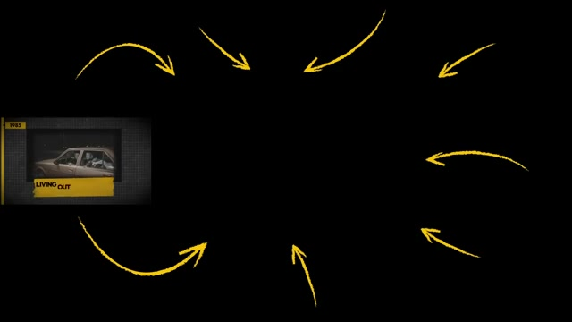
마지막 16초는 다음 영상으로 이어지는 예고에 가깝다. 로버트 기요사키의 성공 비결이 궁금하면 이어지는 영상을 보라고 안내한다. 1985년 로버트 기요사키 부부가 인생 최악의 밑바닥을 경험했다는 이야기가 시작된다. 그들은 집 없이 낡은 갈색 토요타에서 살았고, 신용카드는 한도까지 썼으며, 남은 돈도 거의 없었다.
차 시트가 침대였다는 묘사는 다음 영상의 서사를 여는 장면이다. 현재 파트의 핵심은 기요사키 이야기 자체가 아니라, 실패와 바닥의 경험이 이후 부의 여정으로 어떻게 전환될 수 있는지에 대한 연결이다. 즉, 앞서 말한 실패 수용, 장기적 적응, 믿음, 행동이라는 주제가 다음 사례로 이어진다. 이 파트는 2편의 결론이면서 동시에 다음 콘텐츠의 출발점이다.
아래는 원문을 길게 옮긴 것이 아니라, 영상 속 핵심 발언을 한국어 요지로 정리한 것이다.
두려움은 멈추라는 명령이 아니라, 성장할 방향을 알려 주는 신호다.
부는 단기 이벤트가 아니라 장기전이며, 복리가 작동하려면 시간이 필요하다.
혼자 가진 시간과 몸만으로는 한계가 있으므로, 팀과 시스템으로 자신을 확장해야 한다.
완벽한 계획을 기다리는 동안 기회는 떠나가며, 움직여야 방향도 고칠 수 있다.
숫자를 모르는 재정 관리는 눈을 가리고 운전하는 것과 같다.
관대함은 단순한 선행이 아니라 네트워크, 평판, 기회를 키우는 성공 전략이다.
성공은 자만을 만들 수 있으므로, 성취 이후에도 학생처럼 배워야 한다.
원하는 삶을 직접 설계하지 않으면 남의 계획 속에서 살게 된다.
책임은 무겁지만 자유이기도 하다. 내가 책임지는 것은 내가 바꿀 수 있다.
비전은 무엇을 원하는지뿐 아니라 왜 원하는지를 아는 것이다.
명확함은 생각만으로 오지 않고 행동 속에서 생긴다.
스스로를 믿기 전까지는 멘토, 책, 영상, 지지자에게서 믿음을 빌릴 수 있다.
실패는 끝이 아니라 피드백이며, 포기하지 않는 한 여정은 계속된다.
이 영상의 후반부는 “빨리 돈 버는 법”이라는 제목과 달리, 진짜 부는 단기 요령이 아니라 장기적 태도와 실행 구조에서 나온다고 말한다. 인내, 복리, 레버리지, 행동, 숫자 관리, 관대함, 겸손은 서로 분리된 조언이 아니다. 장기적으로 버티면서, 혼자 하지 않고, 숫자를 보고, 작게라도 실행하며, 사람과 신뢰를 쌓는 하나의 시스템이다.
특히 강한 메시지는 완벽주의를 버리라는 점이다. 완벽한 계획, 완벽한 타이밍, 완벽한 확신은 대부분 행동을 미루는 핑계가 된다. 화자는 4천만 달러 거래를 놓친 경험, 유튜브 성장에 5년 이상 걸린 경험, 촬영 전 장비 도난을 겪은 경험을 통해 실행과 적응의 중요성을 반복해서 보여준다. 실패하지 않는 것이 목표가 아니라, 실패를 더 빨리 해석하고 다음 행동으로 전환하는 것이 목표다.
또 하나의 핵심은 부와 삶을 분리하지 않는 관점이다. 돈을 많이 버는 것만이 목표가 아니라, 자신이 진정 원하는 삶을 설계하는 것이 중요하다. 어부와 사업가의 우화, 19살 때 안정적인 길 대신 스타트업을 선택한 경험, 책임과 비전과 환경의 5단계는 모두 “남의 성공 공식”이 아니라 “자기 삶의 이유”를 찾으라는 메시지로 연결된다.
실용적으로 적용하면, 오늘 할 일은 거창하지 않아도 된다. 돈의 흐름을 기록하기 시작하거나, 오래 미뤄 온 계좌를 만들거나, 멘토에게 연락하거나, 작은 제품 초안을 내거나, 목표를 글로 쓰는 정도면 충분하다. 중요한 것은 24시간 안에 하나를 실제 행동으로 바꾸는 것이다. 영상의 결론은 명확하다: 완벽히 알 필요는 없고, 믿음을 가지고 다음 한 걸음을 내딛고, 실패하면 배우고 조정하며 계속 가면 된다.
댓글
GitHub 이슈 기반 댓글 시스템입니다.